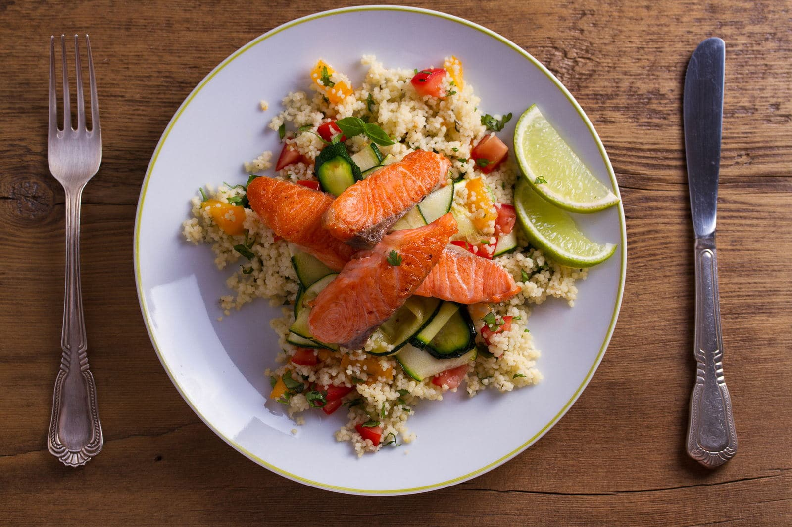

Receita de Cuscuz com Merluza ao Molho
Esse prato simples e saboroso combina a leveza do cuscuz com a
suculência da merluza ao molho de tomate. É uma opção nutritiva e
fácil de preparar, perfeita para um almoço rápido ou um jantar
reconfortante.
Tempo de preparo
- Total: Aproximadamente 30 minutos.
Ingredientes
Para o cuscuz:
- ½ xícara de flocão de milho
- ¼ de xícara de água
- 1 pitada de sal
Para a merluza ao molho:
- 1 filé de merluza
- Suco de ½ limão
- Sal e pimenta-do-reino a gosto
- 1 colher de sopa de azeite
- ¼ de cebola picada
- 1 dente de alho picado
- ½ tomate picado
- ¼ de pimentão verde picado (opcional)
- 100ml de molho de tomate
- Coentro ou salsinha a gosto
Modo de Preparo
Cuscuz:
-
Preparar flocão: Misture o flocão de milho, a água
e o sal. Deixe hidratar por 10 minutos.
-
Cozinhar: Cozinhe na cuscuzeira por 10 minutos após
a água ferver.
-
Tire do fogo: Retire do fogo, solte o cuscuz com um
garfo e coloque num recipiente.
Merluza ao Molho:
-
Tempere o filé: Tempere o filé com limão, sal e
pimenta. Deixe marinar por 10 minutos.
-
Asse na frigideira: Em uma frigideira, aqueça o
azeite e refogue a cebola e o alho até dourarem.
-
Adicione legumes: Adicione o tomate e o pimentão
verde e refogue por mais 3 minutos.
-
Coloque molho de tomate: Acrescente o molho de
tomate, misture bem e cozinhe por 2 minutos.
-
Ponha o filé no molho: Coloque o filé de merluza
sobre o molho, tampe a frigideira e cozinhe em fogo baixo por 10
minutos.
-
Finalize: Finalize com coentro ou salsinha picada.
Montagem e Servir
Sirva o cuscuz ao lado do filé de merluza com bastante molho.
Bom apetite!
Tabela Nutricional
A tabela abaixo mostra os valores nutricionais por porção.
Calorias 380kcal
Carboidratos 45g
Proteínas 25g
Gordura 12g